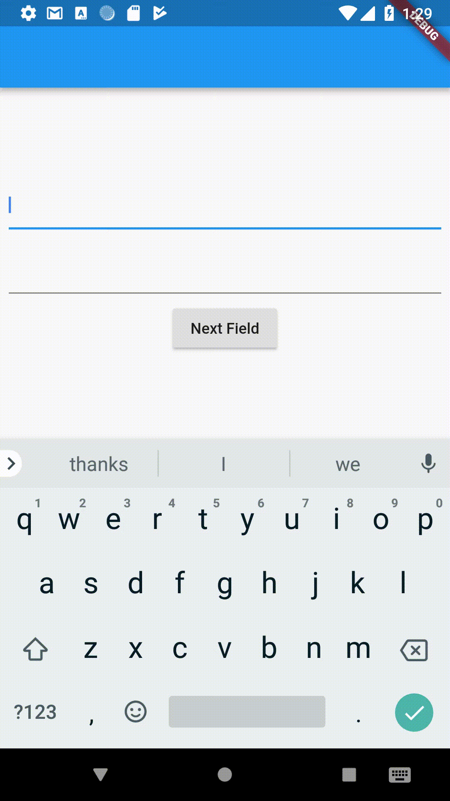

What if we want to change the focus on demand and not just autofocus? Since we need some way to refer which TextField we want to focus to next, we attach a FocusNode to the TextField and use it to switch the focus.
First, create a FocusNode. Use the FocusNode to identify a specific TextField in Flutter’s “focus tree.” This allows you to give focus to the TextField in the next steps.
Since focus nodes are long-lived objects, manage the lifecycle using a State object. Use the following instructions to create a FocusNode instance inside the initState() method of a State class, and clean it up in the dispose() method:
// Define a custom Form widget.
class MyCustomForm extends StatefulWidget {
@override
_MyCustomFormState createState() => _MyCustomFormState();
}
// Define a corresponding State class.
// This class holds data related to the form.
class _MyCustomFormState extends State<MyCustomForm> {
// Define the focus node. To manage the lifecycle, create the FocusNode in
// the initState method, and clean it up in the dispose method.
FocusNode myFocusNode;
@override
void initState() {
super.initState();
myFocusNode = FocusNode();
}
@override
void dispose() {
// Clean up the focus node when the Form is disposed.
myFocusNode.dispose();
super.dispose();
}
@override
Widget build(BuildContext context) {
// Fill this out in the next step.
}
}
Now that you have a FocusNode, pass it to a specific TextField in the build() method.
class _MyCustomFormState extends State<MyCustomForm> {
// Code to create the Focus node...
@override
Widget build(BuildContext context) {
return TextField(
focusNode: myFocusNode,
);
}
}
Finally, focus the text field when the user taps a floating action button. Use the requestFocus() method to perform this task.
FloatingActionButton( // When the button is pressed, give focus to the text field using // myFocusNode. onPressed: () => myFocusNode.requestFocus(), );
If you want to manage focus on multiple TextField you need to have seperate FocusNode for each TextField. But you need to use FocusScope to move focus from one input to another. For example:
// Initialise outside the build method
FocusNode nodeOne = FocusNode();
FocusNode nodeTwo = FocusNode();
// Do this inside the build method
TextField(
focusNode: nodeOne,
),
TextField(
focusNode: nodeTwo,
),
RaisedButton(
onPressed: () {
FocusScope.of(context).requestFocus(nodeTwo);
},
child: Text("Next Field"),
),
